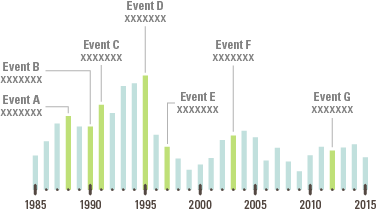
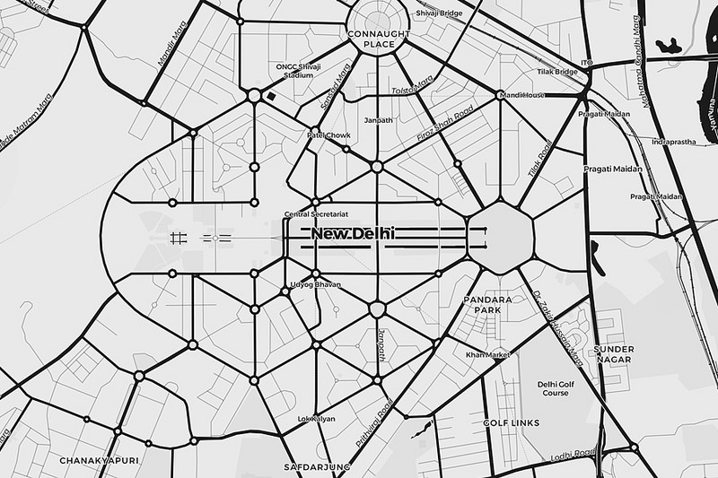
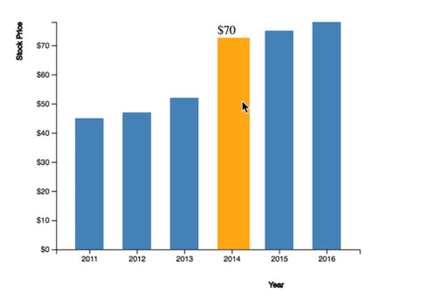

About The Project
Overview
Dr. John Snow's map of London's 1854 cholera epidemic was a true masterpiece.It was the first time that anyone had established a link between contaminated water and cholera.
The visualization gives insights about public health policies to improve water sanitation.
The map illustrates the death location and contaminated pumps of the people who died.
Purpose
To recreate Dr. John Snow's map using D3 (javascript library).
Process
In order to recreate the map a few things were taken into consideration:
1. Understanding the requirement.
2. Doing research about graphs with D3.js.
3. Implementation of the graph.
4. Recieving feedback from peers.
Understanding the projects was a key role which help us visualize the graphs more effectively. I started exploring a number of graphs. I fixed a few graphs in order to illustrate a better representation. The main purpose of the projects design layout
is to not have many empty spaces. These visualizations are placed in quadrants which is easily visible for the individuals that are sitting down for the presentation. I have also used the fluorescent colors with this particular background so the colors are
easily visible as well. If I were to have a white background the fluorescent green might be difficult to see. Some issues I ran into was finding brewery csv file and workhorse. It was not a given csv file so I just created it with random coordinates.
Timeline: A bar with time on X-axis

The bar shows the time in years which is represented in the X-axis and height of the bar shows the count of deaths which is represented in the Y axis. I took reference from Timebar graph
(Please open it incognito mode).
Map: To represent the infected population and age range.

For the map illustrated above, I have used this site as a reference Map .
Age Distribution: Shows the count of deaths with respect to a particular age range.
Gender Distribution: Shows the count of deaths with respect to a particular age range.

For both of the distrubitions listed above, I have used this site as a reference Barchart .